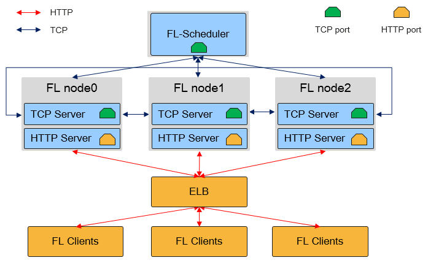

云侧部署
Linux 模型训练 中级 高级

本文档以LeNet网络为例，讲解如何使用MindSpore来部署联邦学习集群。
可以在这里下载本文档中的完整Demo。
MindSpore Federated Learning Server集群物理架构如图所示：

如上图所示，在联邦学习云侧集群中，有两种角色的MindSpore进程：Federated Learning Scheduler和Federated Learning Server:
Federated Learning Scheduler
Scheduler的作用主要有两点：协助集群组网：在集群初始化阶段，由
Scheduler负责收集Server信息，并达成集群一致性。`开放管理面：支持用户通过
RESTful接口对集群进行管理。
在一个联邦学习任务中，只有一个
Scheduler，与Server通过TCP协议通信。Federated Learning Server
Server为执行联邦学习任务的主体，用于接收和解析来自端侧设备的数据，具有执行安全聚合、限时通信、模型存储等能力。在一个联邦学习任务中，Server可以有多个(用户可配置)，Server间通过TCP协议通信，对外开放HTTP端口用于端侧设备连接。在MindSpore联邦学习框架中，
Server还支持弹性伸缩以及容灾，能够在训练任务不中断的情况下，动态调配硬件资源。
Scheduler和Server需部署在单网卡的服务器或者容器中，且处于相同网段。MindSpore自动获取首个可用IP地址作为Server地址。
准备环节
安装MindSpore
选择安装与硬件平台配套的MindSpore版本（版本号>=1.3.0）。
定义模型
为了便于部署，MindSpore联邦学习的Scheduler和Server进程可以复用训练脚本，仅通过参数配置选择不同的启动方式。
本教程选择LeNet网络作为示例，具体的网络结构、损失函数和优化器定义请参考LeNet网络样例脚本。
参数配置
MindSpore联邦学习任务进程复用了训练脚本，用户只需要使用相同的脚本，并通过Python接口set_fl_context传递不同的参数，启动不同角色的MindSpore进程。参数配置说明请参考API文档。
在确定参数配置后，用户需要在执行训练前调用set_fl_context接口，调用方式如下：
import mindspore.context as context
...
enable_fl = True
server_mode = "FEDERATED_LEARNING"
ms_role = "MS_SERVER"
server_num = 4
scheduler_ip = "192.168.216.124"
scheduler_port = 6667
fl_server_port = 6668
fl_name = "LeNet"
scheduler_manage_port = 11202
fl_ctx = {
"enable_fl": enable_fl,
"server_mode": server_mode,
"ms_role": ms_role,
"server_num": server_num,
"scheduler_ip": scheduler_ip,
"scheduler_port": scheduler_port,
"fl_server_port": fl_server_port,
"fl_name": fl_name,
"scheduler_manage_port": scheduler_manage_port,
"config_file_path": config_file_path
}
context.set_fl_context(**fl_ctx)
...
model.train()
本示例设置了训练任务的模式为联邦学习，训练进程角色为Server，需要启动4个Server才能完成集群组网，集群Scheduler的IP地址为192.168.216.124，集群Scheduler端口为6667，联邦学习HTTP服务端口为6668(由端侧设备连接)，任务名为LeNet，集群Scheduler管理端口为11202。
部分参数只在
Scheduler用到，如scheduler_manage_port，部分参数只在Server用到，如fl_server_port，为了方便部署，可将这些参数配置统一传入，MindSpore会根据进程角色，读取不同的参数配置。
建议将参数配置通过Python argparse模块传入：
import argparse
parser = argparse.ArgumentParser()
parser.add_argument("--server_mode", type=str, default="FEDERATED_LEARNING")
parser.add_argument("--ms_role", type=str, default="MS_SERVER")
parser.add_argument("--server_num", type=int, default=4)
parser.add_argument("--scheduler_ip", type=str, default="192.168.216.124")
parser.add_argument("--scheduler_port", type=int, default=6667)
parser.add_argument("--fl_server_port", type=int, default=6668)
parser.add_argument("--fl_name", type=str, default="LeNet")
parser.add_argument("--scheduler_manage_port", type=int, default=11202)
parser.add_argument("--config_file_path", type=str, default="")
args, t = parser.parse_known_args()
server_mode = args.server_mode
ms_role = args.ms_role
server_num = args.server_num
scheduler_ip = args.scheduler_ip
scheduler_port = args.scheduler_port
fl_server_port = args.fl_server_port
fl_name = args.fl_name
scheduler_manage_port = args.scheduler_manage_port
config_file_path = args.config_file_path
每个Python脚本对应一个进程，若要在不同主机部署多个
Server角色，则需要分别建立多个进程，可以通过shell指令配合Python的方式快速启动多Server。可参考示例。
启动集群
参考示例，启动集群。参考示例目录结构如下：
mobile/
├── finish_mobile.py
├── run_mobile_sched.py
├── run_mobile_server.py
├── src
│ └── model.py
└── test_mobile_lenet.py
启动Scheduler
run_mobile_sched.py是为用户启动Scheduler而提供的Python脚本，并支持通过argparse传参修改配置。执行指令如下，代表启动本次联邦学习任务的Scheduler，其TCP端口为6667，联邦学习HTTP服务端口为6668，Server数量为4个，集群Scheduler管理端口为11202：python run_mobile_sched.py --scheduler_ip=192.168.216.124 --scheduler_port=6667 --fl_server_port=6668 --server_num=4 --scheduler_manage_port=11202
启动Server
run_mobile_server.py是为用户启动若干Server而提供的Python脚本，并支持通过argparse传参修改配置。执行指令如下，代表启动本次联邦学习任务的Server，其TCP端口为6667，联邦学习HTTP服务起始端口为6668，Server数量为4个，联邦学习任务正常进行需要的端侧设备数量为8个：python run_mobile_server.py --scheduler_ip=192.168.216.124 --scheduler_port=6667 --fl_server_port=6668 --server_num=4 --start_fl_job_threshold=8
以上指令等价于启动了4个
Server进程，每个Server的联邦学习服务端口分别为6668、6669、6670和6671，具体实现详见脚本run_mobile_server.py。若只想在单机部署
Scheduler以及Server，只需将scheduler_ip配置项修改为127.0.0.1即可。若想让
Server分布式部署在不同物理节点，可以使用local_server_num参数，代表在本节点需要执行的Server进程数量：# 在节点1启动3个Server进程 python run_mobile_server.py --scheduler_ip=192.168.216.124 --scheduler_port=6667 --fl_server_port=6668 --server_num=4 --start_fl_job_threshold=8 --local_server_num=3
# 在节点2启动1个Server进程 python run_mobile_server.py --scheduler_ip=192.168.216.124 --scheduler_port=6667 --fl_server_port=6668 --server_num=4 --start_fl_job_threshold=8 --local_server_num=1
看到日志打印
Server started successfully.
则说明启动成功。
以上分布式部署的指令中，
server_num都为4，这是因为此参数代表集群全局的Server数量，不应随着物理节点的数量而改变。对于不同节点上的Server来说，它们无需感知各自的IP地址，集群的一致性和节点发现都由Scheduler进行调度。停止联邦学习
可以采用
finish_mobile.py用于停止联邦学习服务器，执行如下指令来停止联邦学习集群，其中scheduler_port传参和启动服务器时的传参保持一致。python finish_mobile.py --scheduler_port=6667
可看到结果：
killed $PID1 killed $PID2 killed $PID3 killed $PID4 killed $PID5 killed $PID6 killed $PID7 killed $PID8
说明停止服务成功。
弹性伸缩
MindSpore联邦学习框架支持Server的弹性伸缩，对外通过Scheduler管理端口提供RESTful服务，使得用户在不中断训练任务的情况下，对硬件资源进行动态调度。目前MindSpore的弹性伸缩仅支持水平伸缩(Scale Out/In)，暂不支持垂直伸缩(Scale Up/Down)。在弹性伸缩场景下，必然会有Server进程的增加/减少。
以下详细描述用户如何通过RESTful原生接口，对集群扩容/缩容进行控制。
扩容
在集群启动后，向
Scheduler发起扩容请求，这里使用curl指令构造RESTful扩容请求，代表集群需要扩容2个Server节点：curl -i -X POST \ -H "Content-Type:application/json" \ -d \ '{ "worker_num":0, "server_num":2 }' \ 'http://192.168.216.124:11202/scaleout'
需要拉起
2个新的Server进程，并将server_num参数累加扩容的个数，从而保证全局组网信息的正确性，则扩容后，server_num的数量应为6，执行如下指令：python run_mobile_server.py --scheduler_ip=192.168.216.124 --scheduler_port=6667 --fl_server_port=6672 --server_num=6 --start_fl_job_threshold=8 --local_server_num=2
此指令代表启动两个
Server节点，联邦学习服务端口分别为6672和6673，总Server数量为6。缩容
在集群启动后，向
Scheduler发起缩容请求。由于缩容需要对具体节点进行操作，因此需要获取节点信息：curl -i -X GET \ 'http://192.168.216.124:11202/nodes'
返回
json格式的结果：{ "message": "Get nodes info successful.", "node_ids": [ { "node_id": "40d56ffe-f8d1-4960-85fa-fdf88820402a", "rank_id": "3", "role": "SERVER" }, { "node_id": "1ba06348-f2e2-4ad2-be83-0d41fcb53228", "rank_id": "2", "role": "SERVER" }, { "node_id": "997967bb-c1ab-4916-8697-dcfaaf0354e5", "rank_id": "1", "role": "SERVER" }, { "node_id": "4b8d5bdf-eafd-4f5c-8cae-79008f19298a", "rank_id": "0", "role": "SERVER" } ] }
选择
Rank3和Rank2进行缩容:curl -i -X POST \ -H "Content-Type:application/json" \ -d \ '{ "node_ids": ["40d56ffe-f8d1-4960-85fa-fdf88820402a", "1ba06348-f2e2-4ad2-be83-0d41fcb53228"] }' \ 'http://10.113.216.124:11202/scalein'
在集群扩容/缩容成功后，训练任务会自动恢复，不需要用户进行额外干预。
可以通过集群管理工具(如Kubernetes)创建或者释放
Server资源。
容灾
在MindSpore联邦学习集群中某节点下线后，可以保持集群在线而不退出训练任务，在该节点重新被启动后，可以恢复训练任务。目前MindSpore暂时只支持除Server 0以外的其他Server节点的容灾，而且需要节点下线超过30秒后重启才能恢复正常。
容灾需要配置一个配置文件config.json，具体的格式如下，这个配置文件通过config_file_path指定：
{
"recovery": {
"storage_type": 1,
"storge_file_path": "config.json"
}
}
节点重新启动的指令类似扩容指令，在节点被手动下线之后，执行如下指令：
python run_mobile_server.py --scheduler_ip=192.168.216.124 --scheduler_port=6667 --fl_server_port=6673 --server_num=6 --start_fl_job_threshold=8 --local_server_num=1 --config_file_path=/home/config.json
此指令代表重新启动了Server，其联邦学习服务端口为6673。
在弹性伸缩命令下发成功后，在扩缩容业务执行完毕前，不支持容灾。